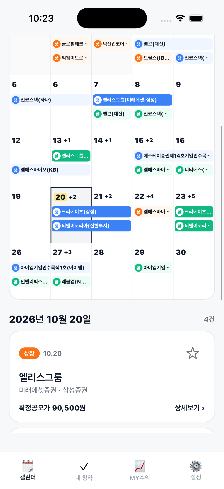
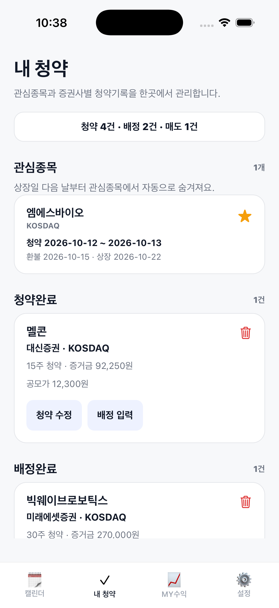
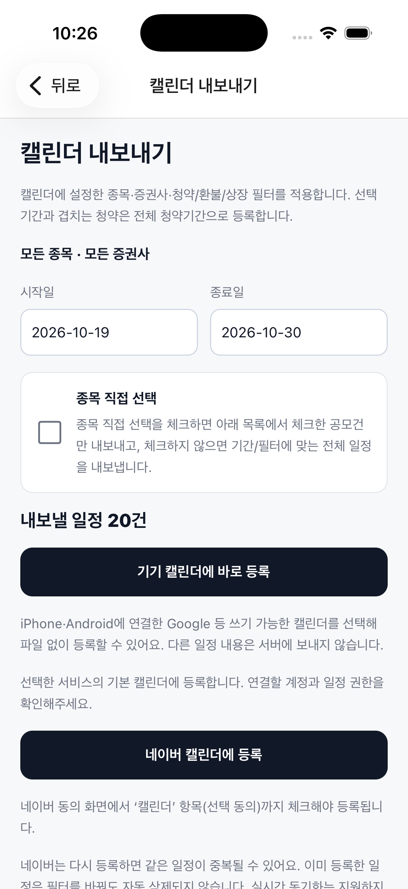

줍줍공모주
국내 공모주(IPO)의 청약·환불·상장 일정을 한눈에 보고, 내 청약·배정·매도 기록으로 실현 수익까지 정리하는 iOS 앱입니다.
일정 정보 제공개인 기록 관리대한민국
App Store에서 받기 →
무료 앱 · iPhone 전용 · 일정 데이터는 금융감독원 전자공시(DART)·한국거래소(KIND) 등 공개 자료 기반
주요 기능

캘린더

내 청약

캘린더 내보내기
📅 공모주 캘린더
청약·환불·상장 일정을 월~금 달력으로 보여줍니다. 일정 유형 뱃지와 주관 증권사가 함께 표기되고, 날짜를 선택하면 그날의 일정 목록이 나타납니다. 공모주 상세에서 공모가, 증권사별 청약 조건, 수요예측 정보와 DART 원문 공시를 확인할 수 있습니다. 로그인 없이 이용할 수 있습니다.
✅ 내 청약 · MY수익
내 청약 내역(종목·증권사·수량)과 배정·매도 결과를 직접 입력해 보관하고, 입력한 매도 기록 기준의 실현 수익을 정리해 보여줍니다. 모든 기록은 사용자가 수동으로 입력하며 증권사 계좌와 연동되지 않습니다.
🔔 일정 알림 · 캘린더 내보내기
청약 시작·마감·상장일을 원하는 시간에 기기 알림으로 받고, 일정을 기기 캘린더·네이버 캘린더에 등록하거나 일정 파일(.ics)로 공유할 수 있습니다.
🔐 계정
이메일, 카카오, 네이버, Apple로 로그인할 수 있습니다. 캘린더와 공모주 상세 정보는 로그인 없이 이용할 수 있고, 관심종목과 청약 기록만 계정에 안전하게 저장됩니다.
줍줍공모주는 일정 확인과 개인 기록 관리를 돕는 정보 서비스입니다. 증권 거래·청약 신청·계좌 연동·투자 자문 기능은 없으며, 특정 종목의 청약·매수·매도를 권유하거나 수익을 보장하지 않습니다.
문의하기
dannykim3501@gmail.com
문제가 발생한 화면과 발생 순서를 알려주세요. 비밀번호나 인증번호는 보내지 마세요. 화면을 첨부할 때 개인정보와 금융정보는 가려주세요.
개인정보와 계정 삭제
줍줍공모주 계정과 저장된 기록은 아래 방법으로 삭제를 요청할 수 있습니다.
1. 앱에서: 로그인 후 설정 → 회원탈퇴에서 바로 삭제할 수 있습니다.
2. 앱 없이: 앱을 삭제했거나 로그인할 수 없으면 앱을 다시 설치하지 않고 위 이메일로 요청해주세요. 가입에 사용한 이메일 또는 로그인 방법(카카오·네이버·Apple·이메일)을 적어주시면 됩니다. 본인 확인에 필요한 최소한의 정보를 요청할 수 있습니다.
삭제되는 정보: 계정 정보(이메일, 로그인 제공자의 사용자 식별자, 소셜 로그인 프로필 정보), 관심종목, 내 증권사, 청약·배정·매도 기록. 삭제가 완료되면 앱에서 복구할 수 없습니다.
남을 수 있는 정보: 문의 메일은 삭제를 요청하면 지웁니다. 인프라 백업과 보안 로그는 Supabase의 보관 정책에 따라 처리됩니다. 캘린더 필터와 알림 설정은 서버가 아닌 기기에만 저장됩니다.
앱 삭제나 로그아웃만으로 서버 기록이 삭제되지는 않습니다.
일정 및 수익 안내
공모주 일정과 조건은 변경될 수 있습니다. 청약 전 발행사 공시와 증권사의 최신 안내를 확인해주세요. 앱의 수익은 사용자가 입력한 매도기록을 기준으로 계산하며 미매도 주식의 평가손익을 포함하지 않습니다.
특정 종목의 청약·매수·매도를 권유하거나 수익을 보장하지 않습니다.